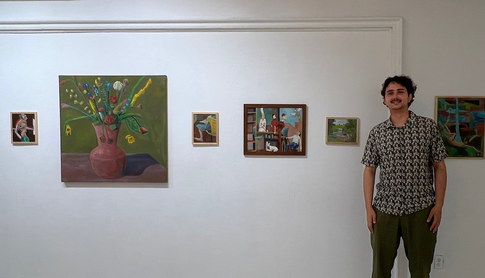

Niklas Dorsch paints figures, scenes, and landscapes pulled from a fictional German village held at a single moment in time. The village is built from impressions of childhood summers in his grandparents' village in Germany. The figures are not remembered — they are invented in the act of painting, discovered rather than planned. Humans, animals, and creatures occupy a moment extracted from a larger, unseen story.
The work sits in a lineage running through Ensor, Beckmann, and Cézanne — mask-like distortion, flattened space, psychological pressure held inside geometry. The characters do not quite belong where they are, which is the condition Dorsch has lived as a German-American: a Grenzgänger, someone on the border of two cultures and fully inside neither.
Thickly built paintings carry visible brushwork accumulating across the surface. Ochres and browns set against saturated yellows, blues, and reds. Faces take on a sculptural, mask-like quality that heightens emotional pressure.
He has studied at the New York Studio School and the Art Students League, and is based in Brooklyn, NY.
Niklas Dorsch
Brooklyn, NY · niklasdorsch.com · dorschniklas@gmail.com
Exhibitions
2026 — Myth and Memory, Seven House Gallery, Brooklyn, NY
2025 — Paintings from 8th Street, Seven House Gallery, Brooklyn, NY
Residencies
2026 — AlterWork Studios, Long Island City, NY
Education
2018–2026 — New York Studio School, New York, NY
2025–2026 — Art Students League, New York, NY